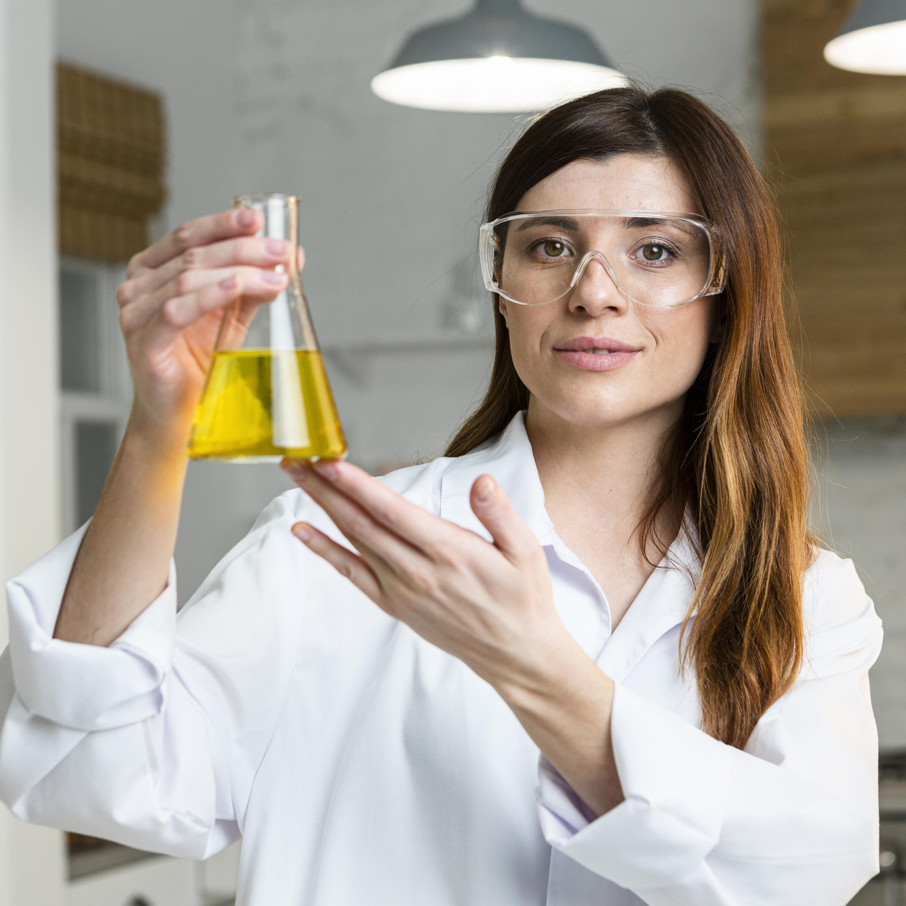

Atendimento ágil e suporte consultivo para projetos de nanotecnologia e proteção hídrica.
Consultoria especializada
Equipe especializada em soluções químicas para indústria, agro e preservação ambiental.
Processos Simplificados
Processos simples, transparência total e comunicação digital sem burocracia.

Soluções para seu negócio
Mais que produtos, entregamos inteligência química para o seu negócio
Atuamos com foco total na excelência operacional, oferecendo produtos inovadores e suporte técnico ágil. Na CTG-Química, acreditamos que prazos e preços competitivos são a base de uma parceria de sucesso.